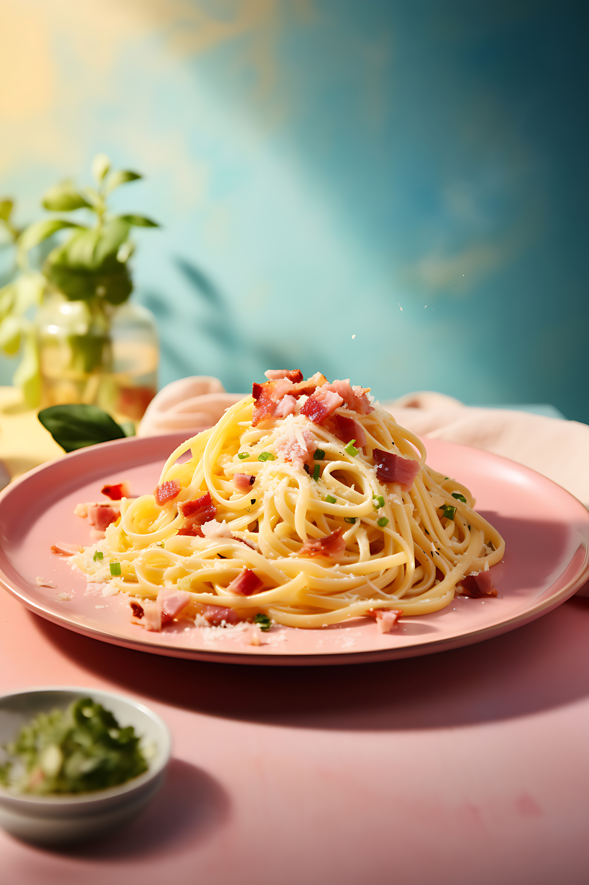

Italian pasta carbonara recipe

Description
The pasta carbonara is a italian classic.
Creamy and delicious with just 4 main Ingredients!
Ingredients
- 350 gram spaghetti
- 200 gram guanciale
- 4 eggs
- 100 grams Pecorino Romano, grated
- ground black pepper
Steps
- First, bring a pot of water to boil while you get the carbonara sauce ready.
Cut the guanciale into small cubes. Cook it in a skillet over medium heat for 2-3 minutes
Once the guanciale is ready, turn off the heat, and set it aside.
- Now, let's make the pecorino cream. In a bowl, whisk together the eggs and cheese.
Add the black peper and mix until you have a creamy sauce. Set aside.
- Cook the spaghetti al dente, following the cooking time of the package.
- Use a spoon for spagheti, drain the pasta when ready. Place them in the skillet over high heat,
to season well with the guanciale.
The next step is a crucial moment of spaghetti carbonara. Not to put tension on it,
but this is the fleeting moment in which you can make or break the dish.
- When the spaghetti and guanciale are sizzling in the pan, Turn off the heat!
Otherwise the eggs will cook too much, and you'll end up with scrambled eggs instead of a creamy carbonara!
Right away, pour the egg and pecorino mixture over the hot pasta and stir quickly.
Since the pan is no longer on the heat, the eggs will cook gently, creating a smooth and creamy texture.
- Tip 1:If your carbonara looks too watery, simply mix in a bit more grated pecorino cheese.
- Tip 2:If it seems to thick or sticky, add a tablespoon or two of pasta water to loosen it up.
- Serve it on a place and grate with some freshy ground black peppar and pecorino. Enjoy!
Home